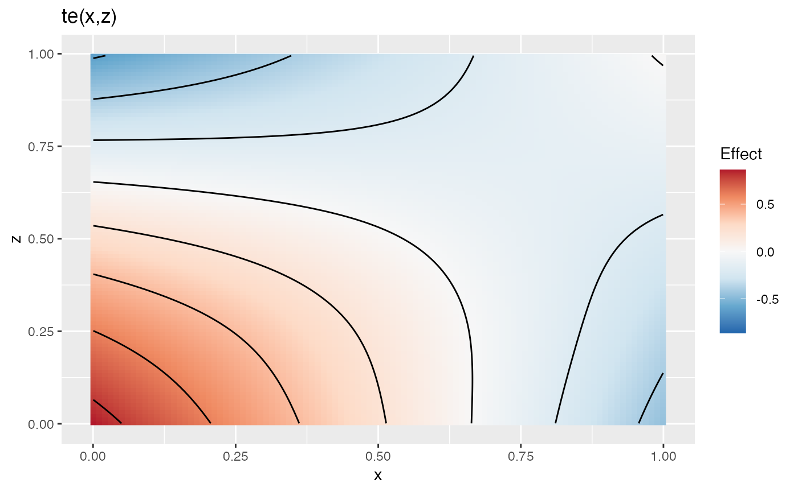
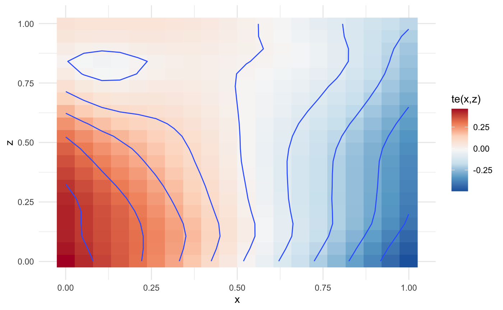

library(metagam)
This vignette demonstrates how to meta-analyze multivariate smooth terms. In particular, we will focus on tensor interaction terms (Wood (2006)). We start by loading mgcv and generate five example datasets with somewhere between 100 and 1000 observations.
library(mgcv) #> Loading required package: nlme #> This is mgcv 1.8-31. For overview type 'help("mgcv-package")'. set.seed(123) datasets <- lapply(1:5, function(x) gamSim(eg = 2, n = sample(100:1000, 1), verbose = FALSE)$data)
Here are the first few rows from the first dataset:
| y | x | z | f |
|---|---|---|---|
| 0.3256550 | 0.7883051 | 0.1717434 | 0.0481496 |
| 0.6593630 | 0.4089769 | 0.4547616 | 0.4421995 |
| -1.9398972 | 0.8830174 | 0.7702048 | 0.3101631 |
| 0.2502011 | 0.9404673 | 0.0626500 | 0.0090102 |
| 0.4023875 | 0.0455565 | 0.8150815 | 0.1027516 |
| 0.0103863 | 0.5281055 | 0.3011425 | 0.2731830 |
We are interested in analyzing the joint effect of the explanatory variables x and z on the response y. This can be done using tensor interaction terms. We will illustrate this using the functions in the mgcv package before showing how individual participant data can be removed and the fits be meta-analyzed.
On the first dataset, we fit the following model:
summary(mod) #> #> Family: gaussian #> Link function: identity #> #> Formula: #> y ~ te(x, z) #> #> Parametric coefficients: #> Estimate Std. Error t value Pr(>|t|) #> (Intercept) 0.24673 0.08726 2.828 0.00487 ** #> --- #> Signif. codes: 0 '***' 0.001 '**' 0.01 '*' 0.05 '.' 0.1 ' ' 1 #> #> Approximate significance of smooth terms: #> edf Ref.df F p-value #> te(x,z) 3.7 4.287 2.201 0.0606 . #> --- #> Signif. codes: 0 '***' 0.001 '**' 0.01 '*' 0.05 '.' 0.1 ' ' 1 #> #> R-sq.(adj) = 0.0135 Deviance explained = 2.06% #> GCV = 3.9497 Scale est. = 3.9135 n = 514
We can get a nice visualization of the term te(x,z) using gratia::draw(). In this case there seems to be an interaction between x and z, hence making such a tensor interaction term useful.

Now assume that a model of the form y ~ te(x, z) is to be fitted to data in the five locations for which we simulated above. We can replicate this here by first fitting the GAM and then calling strip_rawdata() on the resulting objects:
fits <- lapply(datasets, function(dat){ b <- gam(y ~ te(x, z), data = dat) strip_rawdata(b) })
Each element in the list fits now corresponds to a model without any individual participant data, which can be shared with a central location for meta-analysis. The summary method for the fits reproduces the summary output from the original mgcv::gam() fit.
summary(fits[[1]]) #> GAM stripped for individual participant data with strip_rawdata(). #> For meta-analysis of smooth terms, use the following identifiers: te(x,z). #> #> Original output for gam object: #> #> Family: gaussian #> Link function: identity #> #> Formula: #> y ~ te(x, z) #> #> Parametric coefficients: #> Estimate Std. Error t value Pr(>|t|) #> (Intercept) 0.24673 0.08726 2.828 0.00487 ** #> --- #> Signif. codes: 0 '***' 0.001 '**' 0.01 '*' 0.05 '.' 0.1 ' ' 1 #> #> Approximate significance of smooth terms: #> edf Ref.df F p-value #> te(x,z) 3.7 4.287 2.201 0.0606 . #> --- #> Signif. codes: 0 '***' 0.001 '**' 0.01 '*' 0.05 '.' 0.1 ' ' 1 #> #> R-sq.(adj) = 0.0135 Deviance explained = 2.06% #> GCV = 3.9497 Scale est. = 3.9135 n = 514
Assuming all GAM fits without individual participant data have been gathered in a single location and put a list named fits (which we did above), a meta-analytic can now be computed using metagam(). If no grid is provided, metagam() sets up a grid in which the argument grid_size determines the number of unique values of each term. Using the default grid_size = 100 in this case means that the grid has 100 x 100 = 10,000 rows. Performing meta-analysis at each of these points might take a few moments, so we set grid_size = 20 to get a first rough estimate.
metafit <- metagam(fits, grid_size = 20)
The summary method prints out the p-values of the smooth terms:
summary(metafit) #> Meta-analysis of GAMs from 5 cohorts, using method FE. #> #> Smooth terms analyzed: te(x,z) . #> #> Meta-analytic p-values of smooth terms: #> #> Test te(x,z) #> ---------------------- ---------- #> Stouffer's sum of z 6.633e-02 #> Edgington's sum of p 1.777e-01 #> Wilkinson's maximum p 1.951e-01 #> Wilkinson's minimum p 1.916e-02 #> logit p method 4.379e-02 #> Fisher's sum of logs 3.149e-02
We can then plot the corresponding meta-analytic fit:
plot(metafit)

Wood, Simon N. 2006. “Low-Rank Scale-Invariant Tensor Product Smooths for Generalized Additive Mixed Models.” Biometrics 62 (4): 1025–36. https://doi.org/10.1111/j.1541-0420.2006.00574.x.